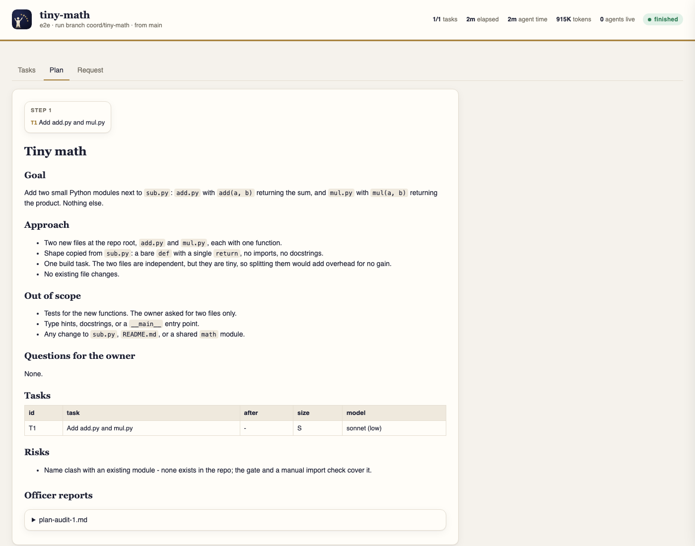

Coordinator plans the work, has a hallucination officer check the plan against your exact words, then builds it in parallel. Each task runs in its own worktree and is reviewed and checked again before it merges. All of it happens in the background. You approve once.
Works in any git project. MIT licensed.
› /coordinate Add CSV export to the orders table, with the same columns the table shows. started orders-csv-export · planning · live page http://127.0.0.1:7412 officer sent the plan back once: T4 added a dashboard nobody asked for plan ready · 3 tasks · T1 and T2 in parallel, then T3 · no questions › approve building T1 ∥ T2 · each in its own worktree, each with its own reviewer finished · 3/3 checked, merged and pushed · draft PR updated after every task
An illustrative run. You type two things; everything else happens in the background.
Five movements. You come in once, at the third.
A strong planner reads the code your request touches, not the whole repository, and writes a short plan of small tasks. Each task gets its dependencies, the files it may change, and the model and effort it needs.
The hallucination officer compares the plan with everything you said. Invented features, oversized answers to simple asks, missing requirements and the wrong model for a task all go back to the planner, for as many rounds as it takes.
You read one audited plan on the live page and approve it, or say what to change. This is the only stop in the run.
Tasks that don't depend on each other run at the same time, each in its own git worktree, and each builder runs its own reviewer.
The officer checks each finished task against the plan. A script then commits, merges into the run branch, runs your gate and pushes, so a draft pull request fills up task by task.
Agents like to over-deliver. Ask for a simple app and you can get an enterprise platform; ask for a feature and you can get five thousand lines of tests. The officer is there to stop that before the plan ever reaches you, and again before each task merges.
Scheduling, merging, the gate and the live page are plain code. They cost no tokens. Agents spend tokens only on planning, building and checking.
A small local page shows every task moving from queued to done, along with the plan, the officer's reports, and each task's brief, changes and review. You approve plans and answer questions there too. It runs on 127.0.0.1 and costs nothing to keep open.

The request, every addition and every answer are kept word for word, and the planner and the officer judge against all of them.
Tests are off by default, and a hook blocks builders from touching test files. When you do ask, the tests stay few, short and relevant.
A builder writes only inside its own worktree. Only the scheduler commits; no agent pushes or switches branches.
Work is pushed to its own run branch and draft pull request, and nothing is merged into your base branch for you. One setting keeps a run fully local.
Coordinator 0.2 replaces an earlier, unpublished version. Here it is next to that version, and next to Claude Code's own /loop.
| Coordinator 0.2 | Coordinator 0.1 | The /loop skill | |
|---|---|---|---|
| What runs the show | A script, at no token cost; agents are separate sessions | An Opus coordinator session with lead agents under it | One session re-running a prompt |
| Who writes the code | Opus by default; the planner picks per task, and the officer checks the pick | Mostly Sonnet workers; Opus only managed | The session's own model |
| Between your words and the code | One brief, checked by the officer | Three layers of briefs | Nothing |
| Parallel work | Yes, a worktree per task | One task at a time | No |
| Guard against invented scope | The officer, on the plan and on every task | Reviewers compared diffs with briefs | None built in |
| Tests | Off unless you ask; enforced | Written by default | Whatever the prompt says |
| Status | A live local page, and a draft PR updated after every task | Status files and HTML reports written by agents | The chat |
| Context per agent | Small: one fresh session per task | Grew to 250–460K tokens per worker | Grows with every iteration |
| Best for | Requests that split into several tasks | Retired | Watching something over time |
Measured from the transcripts of real runs on 0.1. Those numbers shaped 0.2: fewer and stronger agents, parallel work, an officer in place of after-the-fact cleanup, and no proof work nobody asked for. Numbers for 0.2 will be published once it has done runs of the same size.
/plugin marketplace add Kodexa-software/Coordinator /plugin install coordinator@coordinator
git clone https://github.com/Kodexa-software/Coordinator.git cd Coordinator && ./install.sh
Needs a recent Claude Code CLI, Python 3.9+ and git, plus the GitHub CLI for the live pull request. Before/after screenshots also need Node.js; Playwright is fetched on first use.
/coordinate <request>start a runplan <goal>plan only, build laterstatusopen the live pageapproveapprove the plananswer T3 …answer an agenttell T3 …note to a running agentadd …change the planpause · resumestop safely, pick up latershotsbefore/after PNG to your Desktopaccept · retry · stopsettle a taskrunbuild a saved planmapmap the project for plannersterminateend the run and clean up